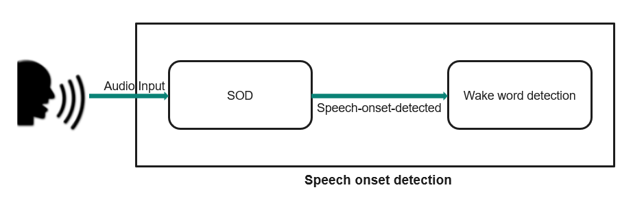

The purpose of a speech onset detector (SOD) is to detect the beginning of a spoken word or utterance. For the target application, the SOD is the first stage of a low power multi-stage wake-up phrase solution. The device is placed in a very low power stand-by mode, but may be woken by the utterance of wake-up phrase. Because the utterance may be spoken at any time, the system is considered "Always On" and may consume significant power. To reduce the power, a multi-stage approach is utilized. In the 1st stage, an always-on low-power SOD is used to detect the onset of speech. If detected, further processing is brought to active state to execute the wake-up phrase detection (WUPD) algorithm. If the WUPD rejects the activity, the WUPD and the processor are placed back in hibernation, and control is passed back to the SOD.

As shown in the block diagram, audio data from the user or environmental noise is fed to the SOD algorithm and the algorithm processes audio data and checks if speech onset is detected. If speech onset is detected, then the audio data is fed to the wake word detection algorithm for further processing.
Speech onset detection middleware provides APIs to feed the audio data and get the status on whether the speech onset was detected or not.
Features and functionality
The current implementation has the following features and functionality:
- SOD MW Input format: SOD MW accepts the audio data in PCM format at 16Khz worth of 10ms for every cy_sod_feed().
- SOD MW configurable options are:
- OnsetGap: Generally, a talker will pause momentarily before addressing a person or in this case, a device. The pause is approximately in the range of 200-500 ms in conversational speech. This compares with the time between words in conversation speech of 0-100ms. If the application is attempting to detect a wake-word, then a pause of at least 200ms is likely. Detecting a keyword in conversational speech would require essentially no pause at all; therefore, it needs full time monitoring; thus unlikely to use an SOD. For the wake-word detection application, having a pause has the advantage of disengaging the wake-word detection during conversational speech and relying on the low complexity SOD to detect an appropriate pause.
- Sensitivity: The performance of the SOD can be characterized by its detection rate and false positive rate. Their relationship is captured in the receiver operating characteristic curve (ROC) and studied. A depiction of the ROC depicts that, as the SNR decreases (increasing noise relative to the speech signal), the false positive rate increases for a given detection rate. In order to control the operating point of the SOD, and hence the trade-off between detection rate and false positive rate is defined as sensitivity. The sensitivity is controlled by modifying the thresholds for detection.
Prerequisite
Please refer to README.md for quick start on platforms
Code snippets
Code Snippet 1: Initialize SOD middleware
This code snippet demonstrates how to initialize speech onset detection middleware with configuration
#define SOD_SENSITIVITY (16384)
cy_rslt_t snippet_sod_init(void)
{
cy_rslt_t ret_val = CY_RSLT_SUCCESS;
void *app_sod_handle = NULL;
ret_val =
cy_sod_init(&sod_config_params, &app_sod_handle);
if(ret_val != CY_RSLT_SUCCESS)
{
printf("Failed to initialize SOD component \r\n");
}
else
{
printf("SOD init success \r\n");
}
return ret_val;
}
cy_rslt_t cy_sod_init(cy_sod_config_params *config_params, cy_sod_t *handle)
Initializes the SOD MW.
#define CY_SOD_ONSET_GAP_SETTING_400_MS
Speech onset gap of 400ms.
Definition: cy_sod.h:66
SOD configuration parameters.
Definition: cy_sod.h:150
int onset_gap_setting_ms
Onset gap settings.
Definition: cy_sod.h:176
int sensitivity
Sensitivity, The detection sensitivity (0- 32767) 0 = least sensitive 32767 (MAX_SOD_SENSITIVITY) = m...
Definition: cy_sod.h:157
Code Snippet 2: SOD initialization & audio processing
This code snippet demonstrates how to initialize SOD middleware and feed audio data
void snippet_sod_process()
{
cy_rslt_t ret_val = CY_RSLT_SUCCESS;
void *sod_handle = NULL;
int16_t* input_audio = NULL;
ret_val =
cy_sod_init(&sod_config_params, &sod_handle);
if(ret_val != CY_RSLT_SUCCESS)
{
printf("Failed to initialize SOD component \r\n");
}
else
{
printf("SOD init success \r\n");
}
cy_sod_process(sod_handle,
true, (int16_t *)input_audio, &sod_status);
{
printf("SOD detected \r\n");
}
}
cy_sod_status_t
SOD detection status.
Definition: cy_sod.h:102
@ CY_SOD_STATUS_INVALID
Speech detection status is invalid.
Definition: cy_sod.h:106
@ CY_SOD_STATUS_DETECTED
Speech onset is detected.
Definition: cy_sod.h:113
cy_rslt_t cy_sod_process(cy_sod_t handle, bool sod_check_trigger, int16_t *data, cy_sod_status_t *sod_status)
Process the audio data and detect the speech onset on the data.